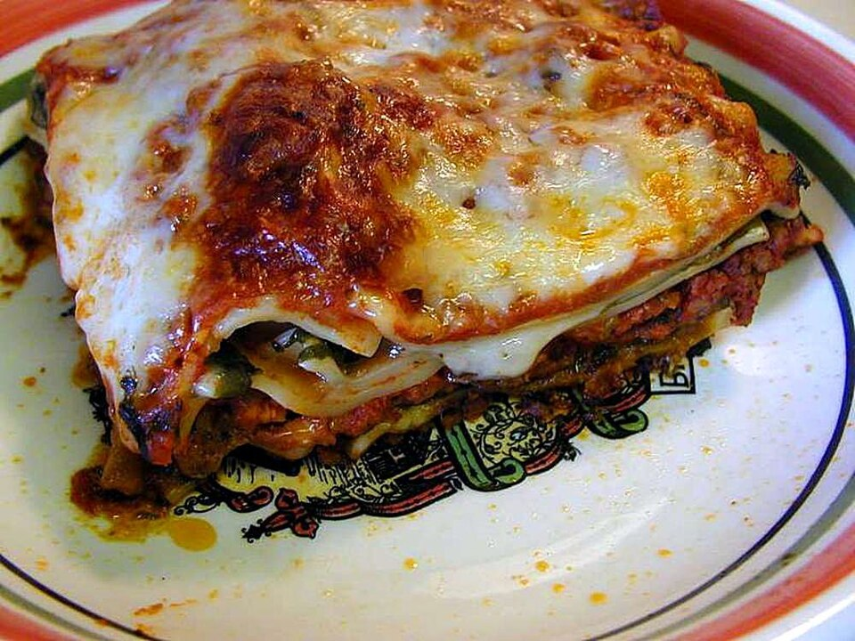

Lasagna

What is Lasagna?
Lasagna is a classic Italian comfort dish made by layering wide sheets of pasta with rich meat sauce, creamy béchamel or ricotta cheese, and melty mozzarella, all baked to bubbling perfection. The heart of the dish is a savory ragù made from ground beef or pork simmered with garlic, onions, tomatoes, and Italian herbs, which is spread between layers of pasta and cheese. Each layer builds flavor and texture, resulting in a hearty, satisfying meal. Once assembled, the lasagna is baked until golden and slightly crisp on top, then rested to set before slicing. Perfect for feeding a crowd, it's a warm, flavorful dish that only gets better the next day!
Ingredients
- 12 lasagna noodles
- 1 tablespoon olive oil
- 1 pound ground beef
- 1/2 pound Italian sausage (optional)
- 1 small onion, chopped
- 3 cloves garlic, minced
- 1 (28 oz) can crushed tomatoes
- 1 (6 oz) can tomato paste
- 1 teaspoon dried basil
- 1 teaspoon dried oregano
- Salt and pepper to taste
- 15 oz ricotta cheese
- 1 egg
- 2 cups shredded mozzarella cheese
- 1/2 cup grated Parmesan cheese
- Fresh parsley for garnish (optional)
Instructions
- Preheat your oven to 375°F (190°C).
- Cook the lasagna noodles according to the package instructions. Drain and set aside.
- In a large skillet, heat olive oil over medium heat. Add chopped onion and cook until soft.
- Add ground beef (and sausage, if using), and cook until browned. Drain excess fat.
- Stir in garlic, crushed tomatoes, tomato paste, basil, oregano, salt, and pepper. Simmer for 15-20 minutes.
- In a bowl, mix ricotta cheese with the egg and a pinch of salt.
- Spread a thin layer of meat sauce in the bottom of a 9x13 inch baking dish.
- Place 3-4 lasagna noodles over the sauce. Spread 1/3 of the ricotta mixture over the noodles. Top with 1/3 of the meat sauce and sprinkle with mozzarella.
- Repeat layers two more times: noodles, ricotta, sauce, mozzarella.
- Top the final layer with remaining mozzarella and Parmesan cheese.
- Cover with foil and bake for 25 minutes. Remove foil and bake for another 20 minutes until golden and bubbly.
- Let lasagna rest for 10-15 minutes before serving. Garnish with parsley if desired.
Back to index